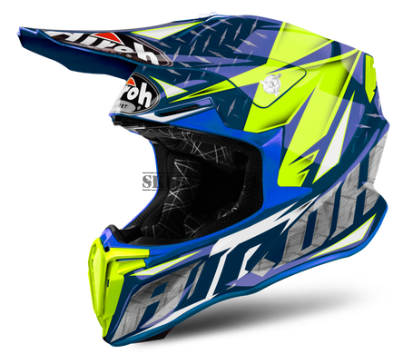
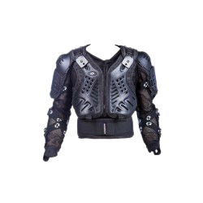
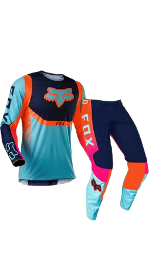

Motocross (oznaczany też skrótami MotoX, MX i cross, kross) – forma wyścigów motocyklowych rozgrywana na specjalnych torach do tego przystosowanych. Tory motocrossowe usypane są zazwyczaj z piasku, gliny lub ziemi. W wyścigu motocrossowym przeważnie bierze udział 40 zawodników. Wyścig w mistrzostwach świata trwa 30 minut + 2 okrążenia. Długość wyścigu zależy od rangi zawodów. Zawodnicy ścigają się na specjalnie przeznaczonych do tych wyścigów motocyklach z silnikami o pojemnościach od 50 cm³ do 525 cm³.
E n d u r o
Enduro – rodzaj sportu motorowego polegający na pokonaniu trasy o nawierzchniach asfaltowych, jak i terenowych.
Trasa liczy zazwyczaj od 200 do 300 km. W czasie rajdu zawodnicy zaliczają poszczególne próby czasowe. W Polsce i w większości krajów są to próby: Cross, Enduro i SuperCross
W rajdach enduro ścigać się mogą motocykle o pojemnościach od 50 cm³ do pow. 500 cm³ podzielone na poszczególne klasy:
Największą imprezą Enduro jest tzw. „sześciodniówka”, czyli Mistrzostwa Świata Drużyn Narodowych w Enduro.
Motocykle enduro różnią się od motocykli motocrossowych, ponieważ są wyposażone w homologację. Muszą odpowiadać normom wynikającym z kodeksu drogowego, m.in. posiadać oświetlenie, homologowane opony, nie przekraczać norm hałasu i emisji spalin.
Tuning silników motocyklowych – co to właściwie znaczy?
Tuning, czyli po polsku strojenie, to nic innego jak dostrajanie (silnika, wyglądu) do określonych potrzeb. Pojęcie tuningu ujrzało światło dzienne gdzieś w latach pięćdziesiątych ubiegłego wieku w USA, gdzie modne stały się modyfikacje mechaniczne i wizualne samochodów. Przez kolejne 60 lat termin ten ewoluował wraz z rozwojem motoryzacji i stosowanych w pojazdach mechanicznych technologii.
Tuning mechaniczny to podmiana seryjnych części na części tuningowe lub stosowanie zmyślnych trików, które pozwalają powiększyć moc i osiągi domowymi sposobami.
Obecnie najczęściej stosuje się podmianę części seryjnych na tuningowe zamienniki, które są znacznie mocniejsze w stosunku do seryjnych.
Najczęściej zmienia się cylindry, wały, gaźniki, wariatory, tłumiki, sprzęgła, układy zapłonowe, membrany, przełożenia, filtry powietrza, zawory ssące etc. Najbardziej znane firmy tuningowe specjalizujące się w tuningu skuterów i motorowerów i niektórych motocykli z silnikiem dwusuwowym to Metrakit, Airsal, Leo Vince, Stage6, Tecnigas, Naraku, Malossi, Polini, Yasuni, Hebo, TEC, TOP Performance oraz Top Racing.
Wbrew pozorom, nie chodzi wcale o to, by Twój motocykl nagle dochodził do niewyobrażalnych prędkości. Tuning mechaniczny zazwyczaj dotyczy brzmienia dźwięków motocykla. Chodzi tutaj o zmianę końcówki wydechu z uwzględnieniem tego, by pasowała do Twojego motocykla. W wielu przypadkach zdarza się, że już sama wymiana tłumika końcowego nie tylko nada atrakcyjny wygląd pojazdowi, ale też uatrakcyjni jego dźwięk. Do innych rodzajów tuningu mechanicznego należy między innymi wymiana filtrów powietrza, klamek, sprzęgła, amortyzatorów skrętu lub hamulców. Ważne jest, by te zmiany nie zaszkodziły funkcjonalności motocykla, dlatego zaleca się, by dobrał je specjalista.
Tuning skuterów jest umownie podzielony na trzy klasy osiągów
Sport – moc od 8 do około 11 koni mechanicznych, pojemność 70 ccm. W tej klasie tuningu najczęściej wymienia się: cylinder(na sportowy zamiennik o
pojemności 70 centymetrów sześciennych), wał (na sportowy odpowiednik odporniejszy na wysokie prędkości obrotowe silnika i zwiększający
kompresję skrzyni korbowej, gaźnik (najczęściej 21 mm), wariator oraz tłumik. Klasa sport cechuje się większą mocą i
prędkością maksymalną niż seryjny skuter i jest najczęściej wybieraną klasą tuningową w Polsce.
Racing – moc od 12 do około 18 koni mechanicznych, pojemność 70 ccm.
W tej klasie tuning jest podobny do klasy sport, ale różni się przede wszystkim innym cylindrem
(najczęściej chłodzone cieczą) który ma większą moc nominalną niż cylindry klasy sport oraz tłumikiem który nie posiada homologacji
i pozwala na lepszą i wydajniejszą pracę cylindra. W tej klasie moc na poziomie 16 koni mechanicznych pozwala na rozwijanie bardzo
dużych prędkości i wyśmienitych przyśpieszeń. Klasę tę przeważnie wybierają ludzie którzy mają zamiar profesjonalnie ścigać się na
skuterach, ale wybierają ją też zwykli użytkownicy którzy chcą mieć naprawdę mocną maszynę.
High end (EVO) – moc od 18 do około 30 koni mechanicznych, pojemność 70 ccm. Najmocniejsza klasa tuningowa cechuje się ogromną mocą,
ogromnymi przyspieszeniami, niewyobrażalnie wielką prędkością maksymalną (około 160 km/h)oraz wielką awaryjnością spowodowaną wielkim
obciążeniem silników. Klasę tę wybierają przeważnie zawodnicy ścigający się na 1/8 mili oraz zwykli użytkownicy którzy potrzebują bardzo
wielkiej mocy. W klasie EVO stosuje się bardzo mocne i zaawansowane technicznie cylindry które są dziełami sztuki inżynierii precyzyjnej.
Niestety wielka moc na poziomie około 25 koni mechanicznych okupiona jest bardzo wielką awaryjnością (wymiana cylindra i tłoka po 200
roboczogodzinach). Przy tej klasie w silniku seryjny zostaje tylko blok, reszta to tuningowe części najwyższej jakości.
Pomiędzy głównymi klasami istnieje dużo klas pośrednich np. midrace czy Big Bore. klasy te cechują się wielką różnorodnością części tuningowych użytych w projekcie, jak na przykład cylinder klasy sport i wydech klasy racing.
P r a w i d ł o w y U b i ó r
W motocrossie i off-roadzie obowiązuje ważna zasada: ubieraj się do upadku, nie do jazdy. Im lepiej przygotujesz się do kontaktu z glebą, tym większe prawdopodobieństwo, że po jeździe wrócisz bezpiecznie do domu. Producenci odzieży, ochraniaczy i kasków nieustannie doskonalą własne technologie by zapewnić ci jak najlepszą ochronę, komfort i maksimum zabawy.
Priorytetem w doborze odzieży do motocrossu i offroadu jest bezpieczeństwo.
Na szczęście czołowi producenci dbają o to, by także strona wizualna spełniała najwyższe oczekiwania motocyklistów. Jeśli chcesz dobrać elementy własnego stroju do motocrossu lub off-roadu, skorzystaj z fachowej rady sprzedawców Dobrych Sklepów Motocyklowych lub poproś o pomoc doświadczonego zawodnika.
KASK - to najważniejszy element ochrony każdego motocyklisty, nie tylko tego, który jeździ po bezdrożach. Jest to wyposażenie obowiązkowe zarówno na drogach publicznych, jak i na każdych zawodach motocross. Kask do motocrossu różni się od kasków szosowych dość znacznie - ma otwartą, przystosowaną do gogli konstrukcję, jest pozbawiony wizjera, blendy i innych zbędnych w terenie akcesoriów, jest również znacznie lżejszy od swojego drogowego odpowiednika. Podczas jazdy w terenie obowiązują jednak te same zasady, co na drodze - kask musi być zapięty, dobrze dopasowany i nie zniszczony. Musi też mieć atest - w Europie obowiązuje ECE R22.05.

GOGLE - jazda bez gogli to proszenie się o kłopoty - kontakt z gałęzią, kamieniem lub fragmentem opony jadącego przed tobą motocykla, dlatego zawsze noś je podczas jazdy. Gogle off-road muszą mieć szkła wykonane z nietłukącego materiału, powinny dobrze przylegać do skóry i być dokładnie dopasowane do twojego kasku. Zanim zdecydujesz się na zakup gogli, przymierz je - producenci stosują różne kształty, wypróbuj który najlepiej będzie pasował do twojej twarzy. W motocrossie stosuje się tak zwane zrywki, czyli przezroczyste naklejki na szkła, które pozwalają natychmiast oczyścić je z błota i kurzu.
ZBROJA - nazwa jest nieprzypadkowa - zadaniem zbroi jest chronić newralgiczne miejsca ciała przed skutkami uderzeń o ziemię, kamienie, drzewa i inne elementy off-roadu lub toru. Zbroja motocyklowa została zaprojektowana tak, by przyjąć i rozproszyć uderzenie przy prędkościach typowych dla jazdy w terenie, nie nadaje się zatem do używania na drogach publicznych, gdzie prędkości sa większe i występuje coś niemal nieznanego w terenie - tarcie z wysoką temperaturą. Alternatywą dla zbroi jest buzer, który zapewnia nieco mniejszy stopień ochrony, ale daje większą swobodę ruchów.

STRÓJ - aby bezpiecznie jeździć w terenie lub na torze, wymagane są dobrej jakości spodnie ochronne z protektorami i bluza z długim rękawem, którą zakłada się na zbroję. Krój powinien być swobodny - tak, by nie krępował ruchów. Ogromna oferta marek takich jak Fox czy Shift pozwala na dobranie wzoru koszulki i spodni do własnego stylu, a nawet nastroju.

BUTY - off-roadowe lub do motocrossu muszą usztywnić i zabezpieczyć staw skokowy i stopę oraz ochronić golenie. W tym celu buty muszą być perfekcyjnie dopasowane do stopy i łydki, nie mogą uciskać ale też mieć żadnych luzów. Wiele modeli posiada specjalne szyny z bardzo twardych materiałów, które mają za zadanie dodatkowo usztywnić konstrukcję buta. Dla jak najlepszego dopasowania buta do nogi, producenci stosują system klamer i zatrzasków.
.jpg)